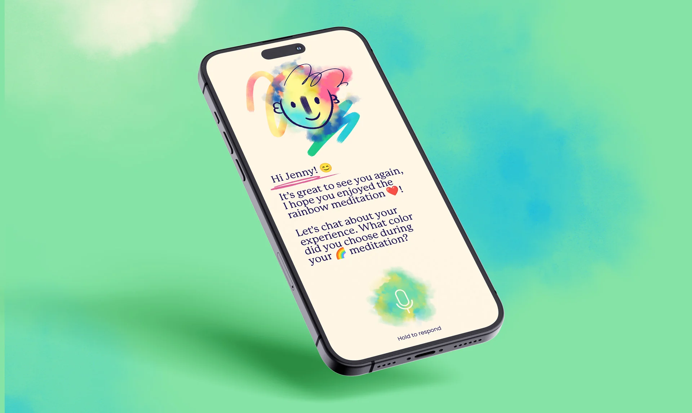
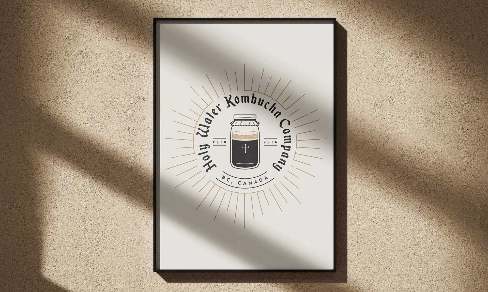
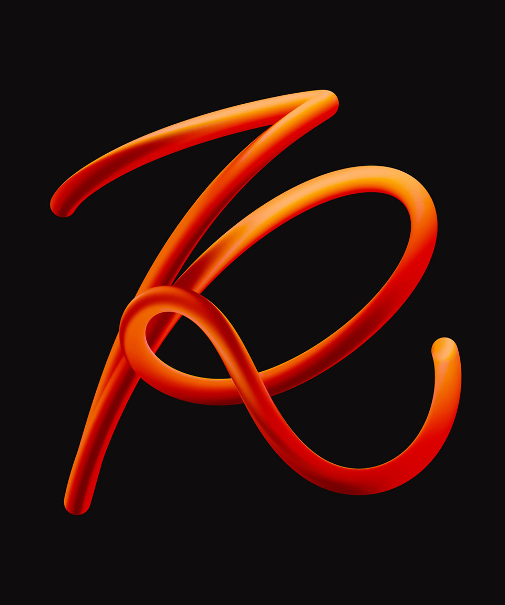
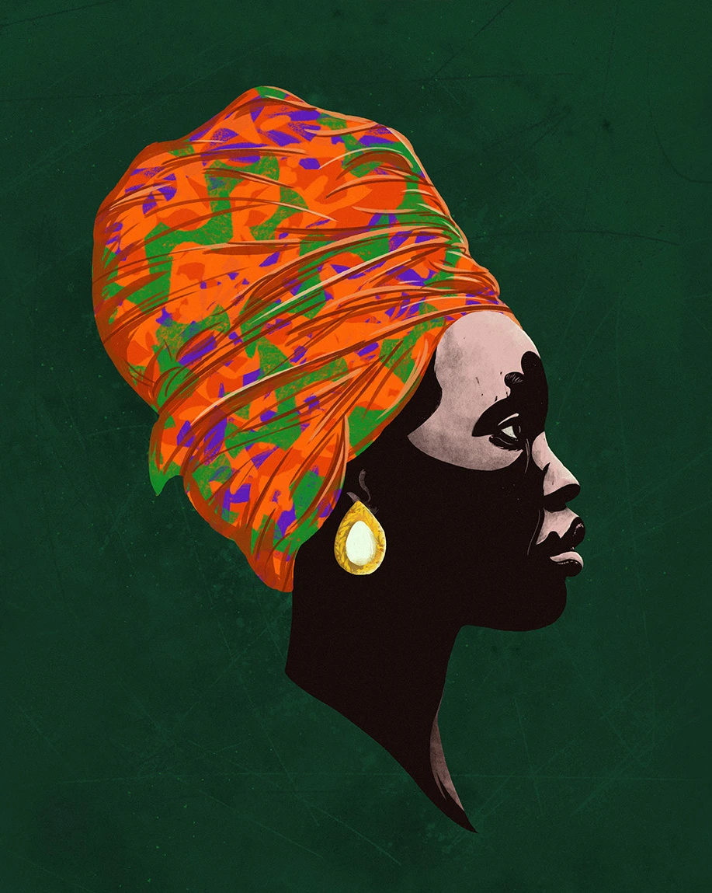
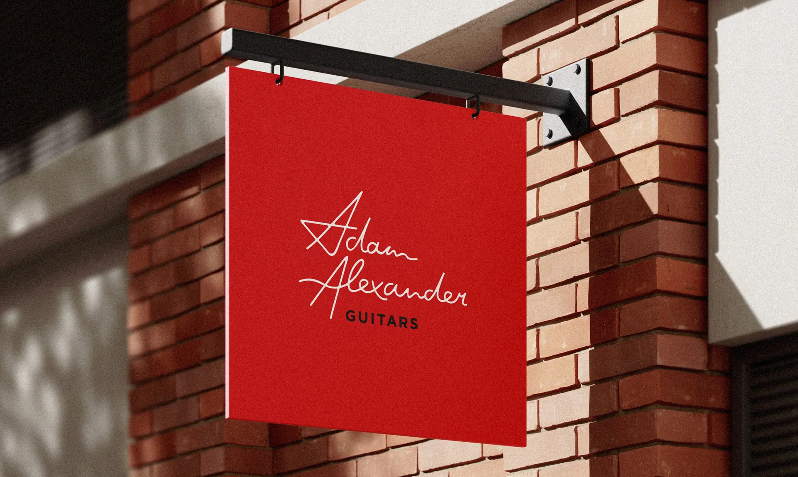
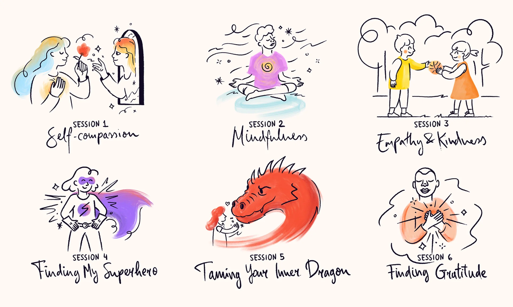
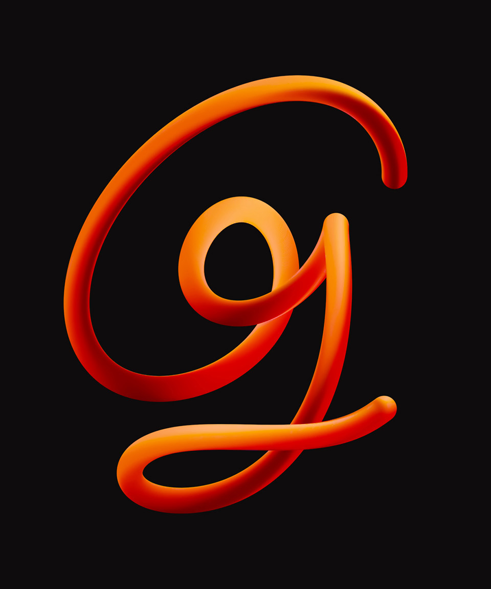
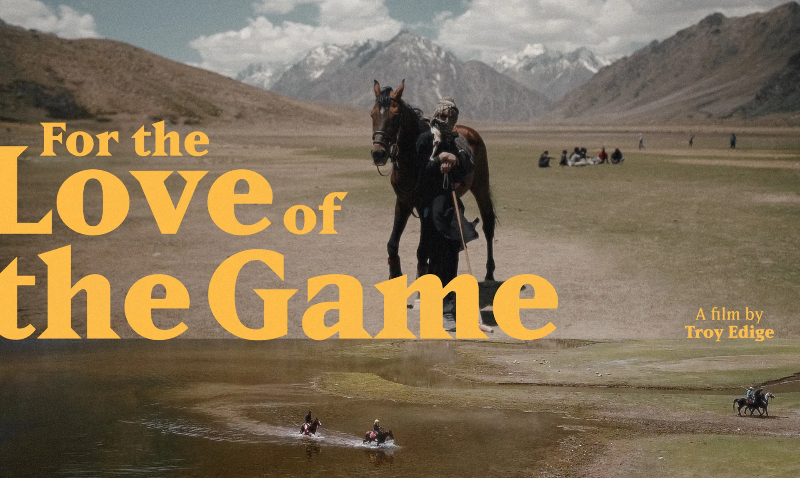

05 — Scraps
An overwhelming feed
of half-finished ideas.
"Design is the last conversation before silence."

A typeface where every glyph is drawn from a single continuous line. No lifts. No shortcuts.

Maroon is the most honest colour. It doesn't try to be red. It tried once, and stopped.
"The grid is a lie we agree to tell together."


Generative seed packet labels. Each unique. Each something that could theoretically grow.
"A logo is a scar. Made with intention. Healed into identity."

Finish the binaural frequency explorer. It was almost working in March.

"Every material has a direction it wants to go. Your job is to agree."

Variable font where weight is controlled by ambient sound level. Quiet room = thin. Noise = black.

How do you design for something that shouldn't need design? The question keeps coming back.